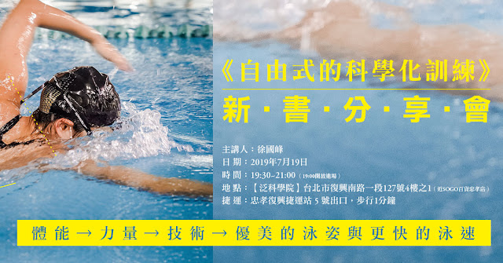

《自由式的科學化訓練》新書分享會

因為喜歡練游泳，也喜歡研究，開始教學之後就想把自己積累起來的知識與經驗有系統地整理出來，所以在二〇一二年寫了《在水裡自由練功》這本書。出版後收到許多讀者的來訊說這本書對他們的幫助很大。經過了六年，對於「理論」、「訓練」和落實到「課表」的方法，有了更深入的理解，因此才有了這次的改版。
--
游泳的進步需要透過「體能訓練」、「力量訓練」與「技術練習」才能達成。有些人可能知道「如何練」，但卻不理解技術動作背後的力學原理，無法真正練成功夫；想要進步不能只是在水裡反覆來回的游，那只會練到體能；也不能一味地模仿菁英選手的泳姿，因為如果沒有足夠的活動度、穩定度與支撐力，再認真練習技術也做不到；有些人知道力量很重要，但力量進步後游泳成績卻沒提升，主因是沒有掌握到游泳推進力的本質，所以在練力量時應該把技術和體能訓練整合進去。
這本書從技術論起，接著談力量、體能，最後統整成一份訓練課表，有階段地引導游泳愛好者了解自由式的科學化訓練理論與方法。
如果你也有興趣了解自由式科學化訓練的游泳或鐵人三項愛好者，歡迎前來，7/19(五)晚上我會跟與會者談談這本書。
我會先談談技巧中的兩個元素(減少水阻與增加推進力)，以及技巧與力量之間的關係（有些技巧做不到是因為力量不夠的關係，而力量又包含了幾個元素在裡頭），接著談「泳力」這個概念的由來與用法，以及該如何把體能、力量與技術整合到課表中。會中也邀請了去年跟過這份課表的學員來分享四週跟課表的訓練經歷。
每個環節之後有QA時間，也歡迎大家帶著問題前來。新書分享會是免費入場，但因為空間與坐位有限，若到時坐位不夠的話，先請多多包涵。
🏊♂🏊♀🏊♂🏊♀🏊♂🏊♀
新書分享會的日期與地點：
■主講人：徐國峰
■日 期：2019年7月19日
■時 間：19:30~21:00
■地 址：【泛科學院】台北市復興南路一段 127 號 4 樓之 1（ 近 SOGO 百貨忠孝店，離忠孝復興捷運站 5 號出口，步行 1 分鐘）
■活動連結：https://www.facebook.com/events/549982118866109/
🏊♂🏊♀🏊♂🏊♀🏊♂🏊♀
新書分享會內容：
■減少水阻與增加推力的技巧、QA
■力量訓練、泳力表與四週課表介紹、QA
■使用課表實際體驗者分享、QA
■總結